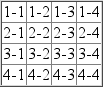

CSS权威指南（3rd）笔记-查缺补漏6 - 表布局
你可能会奇怪，“表布局？这不是我们一直都极力避免的吗？”确实如此，不过本章并非讨论如何使用表来建立布局，而是要介绍CSS中表本身如何布局，这个问题乍看起来可能很简单，但实际上要复杂得多。
与文档布局的其他方面相比，表很特别。在CSS2.1中，表本身就能够确定其他元素的元素大小，例如，可以让一行中的所有单元格都有相同的高度，而不论每个单元格中可能包含多少内容。还可以让一列中的单元格都有相同的宽度。建立文档布局时，没有哪种情况能够以这样一种直接的方式让文档树中不同部分的元素相互影响大小和布局。
可以看到，这种特殊性使表具有很多特殊的行为和规则，而且这些行为和规则是表所独有的。本章中我们将介绍表在视觉上如何组装，另外会介绍绘制单元格边框的两种方法，还将介绍确定表及其内部元素高度和宽度的机制。
表格式化
你可能在考虑如何绘制单元格边框以及如何确定表的大小，不过在此之前，我们先来学习组装表的基本方法，并了解表中的元素相互之间有什么关系。这称为表格式化，它与表布局有很大不同：只有介绍完表格式化，才有可能介绍表布局。
表的视觉编排
首先要了解CSS如何定义表的编排。尽管这看上去很基本，不过对于理解如何最佳地设置表样式至关重要。
CSS对于表元素和内部表元素有很分明的界限。在CSS中，内部表元素生成矩形框，这些框有内容，内边距和边框，但是没有外边距。因此，不能通过指定外边距来定义单元格之间的间隔。如果试图对单元格、行或任何其他内部表元素应用外边距，CSS兼容浏览器只会将其忽略（只有总标题例外）。
表的编排有6个规则。这些规则的基础是“表格单元’这是绘制表的表格线之间的区域。请看下图11-1所示，这里显示了两个表及其表格单元，由表上所画的虚线指示。
在一个简单的2x2表中（如上图11-1中左边的表）表格单元对应于单元格。在更复杂的表中（如上图11-1中右边的表），表格单元的边界对应于表中所有单元格的单元格边框，并穿过跨多行或多列的单元格。
这些表格单元很大程度上是理论性的构造，不能为它们设置样式，甚至不能通过文档对象模型来访问。这些构造只是用于描述如何组装表来设置样式。
表编排规则
- 每个行框包含一行表格单元。表中的所有行框按其在源文档中出现的顺序从上到下地填充表（表的标题行框和脚注行框有所例外，它们分别出现在表的最前面和最后面）。因此，有多少个行元素，表中就包含多少表格行。
- 一个行组包含多少个行框，该行组框就包含多少个表格单元。
- 列框包含一列或多列表格单元。所有列框都按其出现的顺序依次相邻放置。对于从左向右读的语言，第一个列框放在左边，而对于从右向左读的语言，第一个列框则放在右边。
- 列组中包含多少个列框，该列组框中就包含多少个表格单元。
- 尽管单元格可能跨多行或多列，不过CSS对此并没有做出定义，而是由文档语言来定义这种跨行或跨列。每个跨行或跨列的单元格是一个矩形框，其宽度和高度分别为一个或多个单元格。这个矩形框的顶行在作为该单元格父元素的行中。在从左向右读的语言中，该单元格的矩形框必须尽可能向左，不过不能覆盖任何其他单元格框。在从左向右读的语言中，这个单元格还必须在同一行上所有之前单元格（在源文档中较早出现的单元格）的右边。在从右向左读的语言中，跨行或跨列的单元格则必须尽可能向右，但不能覆盖其他单元格，而且要在同一行上所有之前单元格（源文档中在其之前出现的单元格）的左边。
- 单元格框不能超出表或行组的最后一个行框。如果表结构可能造成这种情况，单元格则必须缩小，使之能放在包含它的表或行组中。
注意：CSS规范不建议（但是也不禁止）对表单元格和其他内部表元素定位。例如，如果一个行中包含跨行单元格，对该行定位时可能会显着地改变表的布局，这会从表中完全删除该行，相应地在其他行的布局中不用考虑这个跨行单元格。
根据定义，表格单元是矩形，不过不必都是相同的大小。给定表格列中的所有表格单元宽度相等，一个表格行中的所有表格单元则高度相等，不过，一个表格行的高度可能与另一个表格行的高度不同。类似地，表格列也可能有不同的宽度。
根据这些基本规则，你可能会问：那么，怎么知道哪些元素是单元格而哪些不是呢？
表显示值
在HTML中，很容易知道哪些元素属于表，因为像tr和td之类元素的处理已经内置在浏览器中。与此不同，在XML中则没有办法从根本上知道哪些元素可能是表的一部分。
display
- 值：none | inline | block | inline-block | list-item | run-in | table | inline-table | table-row-group | table-header-group | table-footer-group | table-row | table-column-group | table-column | table-cell | table-caption | inherit
- 初始值：inline
- 应用于：所有元素
- 继承性：无
- 计算值：对于浮动，定位和根元素，计算值可变（见CSS2.1第9.7节）否则，根据指定确定
因此引人了一组display值。与表相关的值可以总结如下：
- table
这个值指定一个元素定义了一个块级表。因此，它定义了一个生成块框的矩形块。相应的HTML元素当然是table。 - inline-table
这个值指定一个元素定义了一个行内级表。这说明，该元素定义了一个生成行内框的矩形块，与之最接近的非表值是inline-block。最接近的HTML元素为table，不过，默认情况下HTML表不是行内元素。 - table-row
这个值指定一个元素是一个单元格的行。相应的HTML元素是tr元素。 - table-row-group
这个值指定一个元素是一个或多个行的组。相应的HTML值是tbody。 - table-header-group
这个值与table-row-group非常相似，只是视觉格式化方面有所不同，标题行组总是在所有其他行和行组之前显示。打印时，如果一个表需要多页打印，用户代理可以在各页顶端重复标题行，规范没有定义如果为多个元素指定table-header-group值会发生什么情况。标题组可以包含多个行。与之对应的HTML元素是thead。 - table-footer-group
这个值与table-header-group很类似，不过脚注行组总是在所有其他行之后显示，如果最下面有页脚标，要在该总标题之前显示。打印时，如果一个表需要多页打印，用户代理可以在各页底端重复页脚行。规范没有定义如果为多个元素指定table-footer-group值会有什么结果。与之对应的HTML元素是tfoot。 - table-column
这个值声明元素描述了一个单元格的列。按CSS的术语来说，有这个display值的元素并不显示，就好像它的display值为none—样。之所以存在这个值，主要是为了帮助定义列中单元格的表示。相应的HTML元素是col元素。 - table-column-group
这个值声明一个元素是一个或多个列的组。类似于table-column元素，table-column-group元素也不显示，不过这个值有助于定义列组中元素的表示。相应的HTML元素是colgroup元素。 - table-cell
这个值指定一个元素表示表中的单个单元格。HTML元素th和td都属于table-cell元素。 - table-caption
这个值定义一个表的总标题。CSS没有定义如果多个元素的display值都为caption时会发生什么情况，不过CSS确实明确地警告，“……创作人员不要在一个表或行内表元素中放多个有display: caption的元素。”
下面从附录C给出的示例HTML 4.0样式表中节取一部分，对这些值的一般效果做了一个简短的总结：1
2
3
4
5
6
7
8
9table {display: table;}
tr {display: table-row;}
thead {display: table-header-group;}
tbody {display: table-row-group;}
tfoot {display: table-footer-group;}
col {display: table-column;}
colgroup {display: table-column-group;}
td, th {display: table-cell;}
caption {display: table-caption;}
在XML中，默认地元素没有显示语义，所以这些值非常有用。考虑以下标记：1
2
3
4
5
6
7
8
9
10
11
12
13<scores>
<headers>
<label>Team</label> <label>Score</label>
</headers>
<garne sport="MLB" league="NL">
<name>Reds</name>
<score>8</score>
</team>
<name>Cubs</name>
<score>5</score>
</team>
</ganle>
</scores>
可以用以下样式将其格式化为一种表格形式：1
2
3
4
5scores {display: table;}
headers {display: table-header-group;}
game {display: table-row-group;}
team {display: table-row;}
label, name, score {display: table-cell;}
然后根据需要对各个单元格应用样式，例如，将label元素变为粗体，对scores右对齐。
以行为主
CSS将其表模型定义为“以行为主”。换句话说，这个模型假设创作人员创建的标记语言会显式声明行，而列是从单元格行的布局推导出来的。因此，第一列由各行中的第一个单元格组成，第二列则由各行中第二个单元格组成，依此类推。
以行为主在HTML中不算大问题，因为HTML本身就是面向行的。而在XML中则影响比较大，因为它限制了创作人员定义表标记的方式。由于CSS表模型本质是面向行的，倘若标记语言中表布局的基础是列，要想使用CSS来表示这种文档是无法做到的。
在本章余下部分，随着我们继续讨论表表示的详细内容，也可以清楚地看出CSS模型具有这种以行为主的性质。
列
尽管CSS表模型是面向行的，列在布局中仍有很重要的地位。虽然单元格在文档源中是行元素的后代，但它们可能同时属于两个上下文（行和列）。不过，在CSS中列和列组只能接受4种样式：border、background、width 和 visibility。
另外，这4个属性有一些只能应用于列上下文的特殊规则：
- border
只有当border-collapse属性值为collapse时才能为列和列组设置边框。在这种情况下，列和列组边框会参与设置各单元格边界边框样式的合并算法（见本章后面“合并单元格边框”部分）。 - background
只有当单元格及其行有透明背景时，列或列组的背景才可见（见本章后面的“表层”部分）。 - width
width属性定义了列或列组的最小宽度。列（或列组）中单元格的内容可能要求列更宽。 - visibility
如果一个列或列组的visibility为collapse，则该列（或列组）中所有单元格都不显示。从合并列跨到其他列的单元格会被剪裁，这类似于从其他列跨到隐藏列中的单元格。另外，表的总宽度会减去已合并列的宽度。如果对列或列组将visibility声明为任何非collapse值（除collapse外），则会被忽略。
匿名表对象
标记语言中可能未包含足够的元素，以至于无法按CSS的定义充分表示表，也可能创作人员没有加入所有必要的元素。例如，考虑以下HTML:1
2
3
4<table>
<td>Name:</td>
<td><input type="text"></td>
</table>
乍看到这个标记，你可能认为它定义了一个包含两个单元格的单行表，不过从结构上讲，这里没有定义行的元素（因为没有tr）。
考虑到这种可能性，CSS定义了一种机制，可以将“遗漏的”组件作为匿名对象插入，为了说明这是如何工作的，下面再来看前面少了行元素的XHTML示例。
按CSS的术语来讲，实际上会在table元素和它的后代表单元格之间插入一个匿名table-row对象：1
2
3
4
5
6<table>
[anonymous table-row object begins]
<cd>Name:</td>
<tdxinput type=" text "></ td>
[anonymous table-row object ends]
</table>
这个过程示意图如下图所示。
CSS表模型中可能出现7种不同的匿名对象插入。类似于继承和特殊性，这7个规则作为一种机制，试图对CSS的表现方式赋予一种直观意义。
对象插入规则
1、如果一个table-cell元素的父元素不是table-row元素，则会在该table-cell 元素及其父元素之间插入一个匿名table-row对象。所插入的这个对象将包含该table-cell元素的所有连续兄弟，考虑以下样式和标记：1
2
3
4
5
6system {display: table;}
name, moons (display: table-cell;}
<systera>
<name>Mercury</name>
<moons>0</moons>
</system>
在单元格元素（table-cell）和system元素之间插入了一个匿名table-row对象，它包含name和moons元素。
即使父元素是table-row-group，这个规则也同样成立。扩展这个例子，假设应用以下样式：1
2
3
4
5
6
7
8
9
10
11
12
13system {display: table;}
planet {display: table-row-group;}
name, moons {display: table-cell}
<system>
<planet>
<name>Mercury</name>
<moons>0</moons>
</planet>
<planet>
<name>Venus</name>
<moons>0</moons>
</planet>
</syscem>
在这个例子中，两组单元格都包含在一个匿名table-row对象中，该对象插入到该组单元格和相应Planet元素之间。
2、如果一个table-row元素的父元素不是table、inline-table或table-row-group元素，则会在该table-row元素及其父元素之间插入一个匿名table元素。插入的这个对象将包含该table-row元素的所有连续兄弟。考虑以下样式和标记：1
2
3
4
5
6
7
8
9
10
11
12docbody{display: block;}
planet {display: table-row;}
<docbody>
<planet>
<narae>Mercury</name>
<moons>0</moons>
</planet>
<planet>
<name>Venus</name>
<moons>0</moons>
</planet>
</docbody>
由于planet元素的父元素的display值为block，所以会在planet元素和docbody元素之间插入匿名table对象。这个对象将包含这两个planet元素，因为它们是连续兄弟。
3、如果一个table-column元素的父元素不是table、inline-table或table-column-group元素，则在该table-column元素及其父元素之间插入一个匿名table元素。这与前面讨论的table-row元素的相应规则很相似，只不过这里是面向列的。
4、如果一个table-row-group、table-header-group、table-footer-group、table-coliunn-group或tdble-caption元素的父元素不是table元素，则会在该元素及其父元素之间插入一个匿名table元素。
5、如果一个table或inline-table元素的子元素不是table-row-group、table-header-group、table-footer-groyp、table-row或table-caption元素，则在该table元素与其子元素之间插入一个匿名table-row对象。这个匿名对象将包含该子元素的所有不是table-row-group、table-header-group、table- footer-group、table-row或table-caption元素的连续兄弟，考虑以下样式和标记：1
2
3
4
5
6
7
8
9
10
11system {display; table;}
planet {display: table-row;}
name, moons {display: table-cell;}
<system>
<planet>
<name>Mercury</nanie>
<moons>0</moons>
</planet>
<name>Venus</name>
<moons>0</moons>
</system>
这里，在system元素和第二组name和moons元素之间插入了一个匿名table-row对象。planet元素未包含在这个匿名对象中，因为其display值为table-row。
6、如果一个table-row-group、table-header-group或table-footer-group元素的子元素不是table-row元素，则在该元素及其子元素之间插入一个匿名table-row对象。这个匿名对象包含该子元素的所有本身非table-row对象的连续兄弟。考虑以下样式和标记1
2
3
4
5
6
7
8
9
10
11system {display: table;}
planet {display: table-row-group;}
name, moons {display: Cable-cell;}
<system>
<planet>
<name>Mercury</name>
<moons>0</moons>
</planet>
<name>Venus</name>
<moons>0</moons>
</system>
在这里，各组name和moons元素都包含在一个匿名table-row元素中。第二组name和moons元素与system之间之所以插入匿名table-row元素，是根据规则5完成的。对于第一组，匿名对象插入到planet元素和其子元素之间，因为planet元素是一个table-row-group元素。
7、如果一个table-row元素的子元素不是table-cell元素，则在该元素和其子元素之间插入一个匿名table-cell对象。这个匿名对象包含该子元素的所有本身非table-cell元素的连续兄弟。考虑以下样式和标记：1
2
3
4
5
6
7
8
9system {display: table;}
planet {display: table-row;}
name, moons {display: table-cellj}
<system>
<planet>
<name>Mercury</name〉
<num>0</num>
</planet>
</system>
由于元素num没有与表有关的display值，将在planet元素和num元素之间插入一个匿名table-cell对象。
这种行为还会扩展到匿名行内框。假设未包含num元素：1
2
3
4
5<system>
<planet>
<name>Mercury</name>0
</planet>
</system>
0仍将包含在匿名table-cell对象中，为了进一步说明这一点，来看一个选自CSS规范的例子：1
2
3
4
5
6
7example {display: table-cell;}
row {display: table-row;}
h1 {font-weight: 900;}
<example>
<row>This is the <hi>top</hi> row.</row>
<row>This is the <hi>bottom</hi> row.</row>
</example>
在每个row元素中，文本片段和hi元素都包含在一个匿名table-cell对象中。
表层
为了完成表的显示，CSS定义了6个不同的“层”，可以分别放表的不同方面。下图显示了这些层。
基本说来，对应表各个方面的样式都在其各自的层上绘制，因此，如果table元素有一个绿色背景，并有1像素的黑色边框，这些样式就会在最低一层绘制。对应列组的样式在其上面一层绘制，列本身在更上一层，如此继续。顶层对应于表单元格，将最后绘制。
在极大程度上，这只是一个逻辑过程，毕竟，如果声明了表单元格的背景色，则希望绘制在table元素的背景之上。上图反映出的最重要一点是，列样式在行样式的下面，所以行背景会覆盖列背景。
要记住重要的一点，默认地，所有元素背景都是透明的。因此，在以下标记中如果单元格。行，列等没有自己的背景，table元素的背景将“透过”这些内部元素可见，如下图所示：1
2
3
4
5
6
7
8
9
10
11
12
13<table style="background:#888;">
<tr>
<td>hey</td>
<td style="background:#CCC;">there</td>
</tr>
<tr>
<td>what's</td>
<td>up?</td>
</tr>
<tr style="background:#AAA;">
<td>tiger</td>
<td styles"background:#CCC;">lilly</td>
</table>

表标题
顾名思义，表标题是一小段文本，描述了表内容的本质。因此，对于2003年第4季度的一个股票行情表，表标题元素的内容可能读作“Q4 2003 Stock Performance”，利用属性caption-side，可以把这个元素放在table之上，也可以放在table的底下，而不论该表标题出现在表结构中的哪个位置（在HTML中，caption元素只能出现在开始table元素的后面，不过其他语言可能有不同的规则）。
表标题有点奇怪，至少从视觉上看有些奇怪。CSS规范指出，表标题格式化为就好像它是直接放在表框之前（或之后）的一个块框，只有两个不同。首先，表标题仍能从表继承值；其次，用户代理在考虑如何处理表前面的run-in元素时会忽略表标题框。因此，如果一个run-in元素在表之前，它不会进人表的上标题，也不会进入表中，而是处理为好像其display值为block。
caption-side
- 值：top | bottom
- 初始值：top
- 应用于：display值为table-caption 的元素
- 继承性：有
- 计算值：根据指定确定
- 说明：CSS2中还有值left和right，不过由于缺乏广泛的支持，这两个值在CSS2.1中已经去掉
通过一个简单的例子就可以说明有关表标题表示的大部分重要方面。考虑以下样式，如下图所示：1
2caption {background: gray; margin: 1em 0;caption-side: top;}
table {color: white; background: black; margin: 0.5em 0;"}
caption元素中的文本从table继承了color值white，但caption有自己的背景。table 的外边框边界和caption的外边距边界之间的间隔为1em，因为table的上外边距与caption的下外边距合并，见前文margin的描述。最后，caption的宽度要基于table元素的内容宽度，这是caption的包含块。如果把caption-side的值改为bottom，会得到同样的结果，只不过caption将出现在表框的后面，另外将合并caption的上外边距和table 的下外边距。
大多数情况下，为caption应用样式非常类似于块级元素，它们可以有内边距、边框。背景等。例如，如果需要改变caption中文本的水平对齐，可以使用属性text-align。因此，要把上例中的标题右对齐，可以写作：caption {background: gray; margin: 1em 0; caption-side: top; text-align: right;}
表单元格边框
CSS中实际上有两种截然不同的边框模型。按布局术语来讲，如果单元格相互之间是分隔的，就是分隔边框模型在起作用。另一种选择是合并边框模型，采用这种模型，单元格之间没有可见的间隔，单元格边框会相互合并。前者是默认模型，不过在CSS的较早版本中，后者才是默认模型。
创作人员可以用属性border-collapse在这两种模型中做出选择。
border-collapse
- 值：collapse | separate | inherit
- 初始值：separate
- 应用于：display 值为table 或 inline-table 的元素
- 继承性：有
- 计算值：根据指定确定
- 说明：在CSS2中，默认值为collapse
这个属性的主要目的是为创作人员提供一个途径，来决定用户代理采用哪一种边框模型。如果值collapse起作用，则使用合并边框模型。如果选择了值separate，就会使用分隔边框模型。我们先来看后一种模型，因为它描述起来简单得多。
分隔单元格边框
采用这种模型，表中的每个单元格都与其他单元格分开一定距离，而且单元格的边框彼此不会合并。因此，给定以下样式和标记，可以看到如下图所示的结果：
注意，单元格边框相互挨着，但彼此保持区别，单元格之间的三条线实际上是相邻放置的两个double边框。
前例中加人了HTML属性cellspacing来确保单元格之间没有间隔，但是用这个属性好像有些麻烦。毕竟，如果能定义分隔边框，就应该有办法使用CSS改变单元格之间的间隔。幸运的是，确实有这样的办法。
边框间隔
可能有这样一种情况，你希望表单元格边框分隔一段距离。利用属性border-spacing 很容易做到，它提供了强大的功能，完全可以替换HTML属性cellspacing.
- 值：
<length> <length>?| inherit - 初始值：0
- 应用于：display 值为table 或 inline-table 的元素
- 继承性：有
- 计算值：两个绝对长度
- 说明：除非border-collapse值为separate，否则会忽略该属性
可以为这个属性指定一个或两个长度值。如果希望所有单元格都分隔1个像素的距离，声明border-spacing: 1px;就足够了。另一方面，如果你希望单元格水平间隔1个像素，而垂直间隔5个像素，就要写作border-spacing: 1px 5px;。如果提供两个长度值，则要求第一个值始终是水平间隔，第二个值始终是垂直间隔。
表外围的单元格边框与表元素本身的内边距之间也可以指定间隔值。给定以下样式，可以得到如下图所示的结果：1
2
3table{border-collapse: separate; border-spacing: 3px 5px; padding: 10px; border: 2px solid black;}
td { border: 1px solid gray;}
td#squeeze {border-width: 5px;}
在上图中，两个水平相邻单元格的边框之间有3像素的空间，最右单元格的边框与table元素右边框之间以及最左单元格的边框与table元素左边框之间都有13像素的空间。类似地，垂直相邻单元格的边框相距5像素，最上面一行中单元格的边框与表的上边框之间以及最下面一行中单元格的边框与表的下边框之间都分别有15像素的空间。不论单元格本身的边框宽度是多少，单元格边框之间的间隔在整个表中是固定不变的。
还要注意，如果要声明一个border-spacing值，这会应用于表本身，而不是单个的单元格。如果为上例中的td元素声明border-spacing，则会被忽略。
在分隔边框模型中，不能为行、行组。列和列组设置边框。如果为这些元素声明了边框属性，都会被CSS兼容的用户代理所忽略。
处理空单元格
从视觉来看，由于每个单元格都区别于表中的所有其他单元格，对于空单元格（即没有内容）该如何处理呢？对此有两种选择，从empty-cells属性的值可以反映出来。
empty-cells
- 值：show | hide | inherit
- 初始值：show
- 应用于：display 值为table-cell 的元素
- 继承性：有
- 计算值：根据指定确定
- 说明：除非border-collapse值为separate，否则会忽略该属性
如果empty-cells设置为show，会画出空单元格的边框和背景，就好像这些表单元格有内容一样。如果值为hide，则不会画出该单元格的任何部分，就好像这个单元格被设置为visibility: hidden。
如果一个单元格包含有内容，则不能认为是空的。在这里“内容”不仅包括文本。图像。表单元素等等，还包括不可分空间实体（ ）和除CR （回车）、LF （换行）、tab和空格符以外的所有其他空白符。如果一行中的所有单元格都为空，而且empty-cells值都是hide，则整行将处理为好像这个行元素设置为display:none.
合并单元格边框
合并单元格模型基本上描述了没有单元格间隔时HTML表通常如何布局，不过，这比分隔边框模型要更复杂一些。以下规则使合并单元格边框与分隔单元格边框有所区别：
display值为table或inline-table的元素不能有任何内边距，不过它们可以有外边距。因此，表的外围边框与其最外单元格的边界之间不会有任何间隔。
边框可以应用到单元格。行、行组、列和列组。表元素本身通常都有一个边框。
单元格边框之间绝对不会有任何间隔。实际上，如果边框相邻，就会相互合并，使得实际上只画其中一个合并边框。这有些类似于外边距合并，即最大的一个外边距“胜出”。单元格边框合并时，“最有意思的”边框会胜出。
一旦合并，单元格之间的边框会在单元格间的假想表格线上居中。
后面将更详细地讨论后两点。
合并边框布局
为了更好地理解合并边框模型如何工作，下面来看一个表行的布局，如下图所示。
不出所料，每个单元格的内边距和内容宽度都在边框以内，对于单元格之间的边框，一半边框放在两个单元格之间表格线的一边，另一半放在另一边，不论哪一种情况，沿着各单元格边界只会画一个边框。你可能认为总是在表格线两边分别画各单元格的一半边框（例如，表格线左边总是画前一个单元格右边框的一半，表格线右边总是画单元格左边框的一半。），但实际上并不是这样。
例如，假设中间单元格的实线边框是绿色，外面两个单元格的实线边框是红色。中间单元格左右两边的边框（与外面两个单元格的相邻边框合并）都将是绿色，或都是红色，这取决于哪个边框胜出。后面我们将讨论如何区分哪个边框会取胜。
你可能已经注意到，外边框超出了表的宽度。这是因为，在这个模型中，宽度只包含表边框的一半。另一半在此距离之外，落在外边距中。看上去可能有些怪异，不过模型就是这样定义的。
规范提供了一个布局公式，为了方便大家学习，以下列出这个公式：row width = (0.5 * border-widthO)+ padding-left1 + width1 + padding-right1 + border-width1 + padding-left2 +...+ padding-rightn +(0.5 * border-widthn)
各border-width是指单元格与下一个单元格之间的边框，因此，border-width3是指第3个和第4个单元格之间的边框。值n代表该行中的单元格总数。这个机制有一个小小的例外。在开始建立一个合并边框表的布局时，用户代理会为表本身计算一个初始的左右边框。这是这样完成的：首先检査表中第一行第一个单元格的左边框，并取该边框宽度的一半作为表的初始左边框宽度。用户代理再检査第一行中最后一个单元格的右边框，取其宽度的一半来设置表的初始右边框宽度。对于第一行之后的其他行，如果其左或右边框比初始边框宽度更宽，则会延伸到表的外边距区中。
如果边框的宽度是一个奇数（即奇数个显示元素，如像素、打印点等），用户代理必须决定如何将边框在表格线上居中。它可能会移动该边框，使之稍稍偏离中心，或者将宽度向上或向下调整为一个偶数（偶数个显示元素），或者采用其他看上去合理的做法。
边框合并
如果两个或多个边框相邻，它们会相互合并。实际上，并不是完全合并，而是要看其中哪一个在其他边框中占上风。哪些边框会胜出，哪些边框会被合并，对此有一些严格的规则：
- 如果某个合并边框的border-style为hidden，它会优先于所有其他合并边框。这个位置上的所有边框都隐藏。
- 如果某个合并边框的border-style为none，它的优先级最低。这个位置上不会画出该边框，除非所有其他合并边框的border-style值都是none注意，none 是 border-style 的默认值。
- 如果至少有一个合并边框的border-style值不是none，而且所有合并边框的border-style值都不是hidden，则窄边框不敌更宽的边框。如果多个合并边框有相同的宽度，则会考虑边框样式，并采用以下顺序（从最优先到最不优先）：double、solid、dashed、dotted、ridge、outset、groove、inset，因此，如果两个有相同宽度的边框合并，而其中一个是dashed边框，另一个是outset边框，该位置上的边框将是虚线边框。
- 如果合并边框的样式和宽度都一样，但是颜色不同，则按下表顺序使用元素的颜色（从最优先到最不优先）： cell、row、row group、column、column group, table。因此，如果一个单元格和一个列的边框合并（除颜色外，所有其他方面都一样），会使用单元格的边框颜色（和样式及宽度）。如果合并边框来自相同类型的元素，如两个有相同样式和宽度但不同颜色的行边框，则颜色取最上最左边框的颜色（在从左向右读的语言中是这样，而在从右向左读的语言中，则取最上最右边框的颜色）。
以下样式和标记有助于说明这4个规则（结果见下图所示）：1
2
3
4
5
6
7
8
9
10
11
12
13
14
15
16
17
18
19
20
21
22
23
24
25
26
27
28table{border-collapse: collapse;
border: 3px outset gray;}
td {border: 1px solid gray; padding: 0.5em;}
#r2c1,#r2c2 {border-style: hidden;}
#r1c1,#r1c4 {border-width: 5px;}
#r2c4 {border-style: double; border-width: 3px;}
#r3c4 {border-style: dotted; border-width: 2px;}
#r4c1 {border-bottom-style: hidden;}
#r4c3 {border-top: 13px solid silver;}
<table>
<tr>
<td id="r1c1">1-1</td><td id="r1c2">1-2</td>
<td id="r1c3">1-3</td><td id="r1c4">1-4</td>
</tr>
<tr>
<td id="r2c1">2-1</td><td id="r2c2">2-2</td>
<td id="r2c3">2-3</td><td id="r2c4">2-4</td>
</tr>
<tr>
<td id="r3c1">3-1</td><td id="r3c2">3-2</td>
<td id="r3c3">3-3</td><td id="r3c4">3-4</td>
</tr>
<tr>
<td id="r4c1">4-1</td><td id="r4c2">4-2</td>
<td id="r4c3">4-3</td><td id="r4c4">4-4</td>
</tr>
</table>
See the Pen 边框合并 by XmoyKing (@xmoyking) on CodePen.
下面依次考虑对各个单元格发生了什么：
- 对于单元格1-1和1-4, 5像素的边框比其他所有相邻边框都宽，所以5像素的边框不仅会胜出其相邻单元格边框，还会优先于表本身的边框，只有单元格1-1的下边框例外，在此不再显示5像素的边框。
- 单元格1-1的下边框之所以没有胜出，是因为单元格2-1和2-2显式声明了边框隐藏，这就从这些单元格的边界上去除了所有边框。同样地，表的边框（单元格2-1左边界上的边框）也落败于该单元格的边框。单元格4-1的下边框也隐藏，所以这个单元格下面不会出现任何边框。
- 单元格2-4的3像素宽double边框顶部被单元格1-4的5像素实线边框所覆盖，不过这个double边框会覆盖该单元格本身与单元格2-3之间的边框，因为这个double 边框不仅更宽而且“更有意思”。单元格2-4的边框还覆盖了它自己与单元格3-4之间的边框，尽管二者宽度相同，但单元格2-4边框的double样式定义为比单元格3-4的dotted边框“更有意思”。
- 单元格3-3的13像素银色下边框不仅会覆盖单元格4-3的上边框，还会影响这两个单元格以及包含这两个单元格的行中的内容布局。
- 对于沿着表外边界而且没有指定样式的单元格，其1像素实线边框会被table元素本身的3像素outset边框所覆盖。
听上去很复杂，也确实如此，不过这些行为都很直观，通过动手实践就会更清楚。但是需要指出，对于Netscape 1时代的基本HTML表，其表示仅用很简单的一组规则就可以描述，如下（结果见下图所示）。1
2table{border-collapse: collapse; border: 2px outset gray;}
td {border: 1px inset gray;}

表大小
既然我们巳经深入讨论过表的格式化和单元格边框显示，下面需要了解如何确定表及其内部元素的大小。谈到确定表的宽度，有两种不同的方法：固定宽度布局和自动宽度布局。不论使用何种宽度算法，高度都会自动计算。
宽度
由于有两种不同方法可以得出表的宽度，因此必须有办法声明一个给定表应当使用哪一种方法。创作人员可以使用属性table-layout来选择采用哪种方法计算表的宽度。
table-layout
- 值：auto | fixed | inherit
- 初始值：auto
- 应用于：display 值为table 或 inline-table 的元素
- 继承性：有
- 计算值：根据指定确定
尽管这两个模型针对一个特定表布局可能有不同的结果，但二者之间最显着的差异是速度。使用固定宽度表布局时，相对于自动宽度模型，用户代理可以更快地计算出表的布局。
固定布局
固定布局模型的速度之所以快，主要原因是布局不依赖于表单元格的内容。其布局是根据该表以及表中列和单元格的width值决定的。
固定布局模型的工作包括以下简单步骤：
- width属性值不是auto的所有列元素会根据width值设置该列的宽度。
- 如果一个列的宽度为auto——不过，表首行中位于该列的单元格width不是auto——则根据该单元格宽度设置此列的宽度。如果这个单元格跨多列，则宽度在这些列上平均分配。
在以上两步之后，如果列的宽度仍为auto，会自动确定其大小，使其宽度尽可能相等。
此时，表的宽度设置为表的width值或列宽度之和（取其中较大者）。如果表宽度大于其列宽总和，将二者之差除以列数，再把得到的这个宽度增加到每一列上。
这种方法的速度很快，因为所有列宽度都由表的第一行定义。首行后所有行中的单元格都根据首行所定义的列宽确定大小。后面这些行中的单元格不会改变列宽，这意味着为这些单元格指定的width值都会被忽略。如果一个单元格的内容无法放下，该单元格的overflow值将决定单元格内容是剪裁。可见还是生成一个滚动条。
考虑以下样式和标记（如下图所示）：1
2
3
4
5
6
7
8
9
10
11
12
13
14
15
16
17
18
19
20
21
22
23
24
25
26
27
28table{table-layout: fixed; width: 400px;
border-collapse: collapse;}
td {border: 1px solid;}
col#c1 {width: 200px;}
#r1c2 {width: 75px;}
#r2c3 {width: 500px;}
<table>
<colgroup>
<col id="c1"><col id="c2"><col id="c3"><col id="c4">
</colgroup>
<tr>
<td id="r1c1">1-1</td><td id="r1c2">1-2</td>
<td id="r1c3">1-3</td><td id="r1c4">1-4</td>
</tr>
<tr>
<td id="r2c1">2-1</td><td id="r2c2">2-2</td>
<td id="r2c3">2-3</td><cd id="r2c4">2-4</td>
</tr>
<tr>
<td id="r3c1">3-1</td><td id="r3c2">3-2</td>
<Cd id="r3c3">3-3</td><td id="r3c4">3-4</td>
</tr>
<tr>
<td id="r4c1">4-1</tdxtd id="r4c2">4-2</td>
<td id="r4c3">4-3</tdxtd id="r4c4">4-4</td>
</tr>
</table>
在上图中可以看到，第一列是200像素宽，这正好是表宽度400像素的一半，第二列宽度为75像素，因为该列中首行单元格明确指定了宽度。第三列和第四列分别为61 像素宽。为什么呢？因为第一列和第二列的列宽之和（275px）再加上列之间各个边框（3px）一共等于278像素。400减去278等于122，而122分为两半就是61，所以这就是第三列和第四列的宽度。#r2c3指定的500像素宽度如何处理呢？这会被忽略，因为该单元格不在表的首行中。
注意，使用固定宽度布局模型时，没有必要非得为表指定一个显式宽度，不过如果指定一个宽度确实有所帮助。例如，给定以下样式，用户代理可能计算出表的宽度比父元素的width窄50像素。它就会在固定布局算法中使用计算得到的这个宽度：table{table-layput: fixed; margin: 0 25px;width: auto;}
不过，这不是必要的。用户代理也可以使用自动宽度布局模型对width值为auto的表完成布局。
自动布局
自动布局模型尽管没有固定布局那么快，不过对你来说可能更熟悉，因为这正是HTML表使用多年的模型。在大多数当前用户代理中，只要表的width为auto就会触发使用这个模型，而不论table-layout的值是什么，不过这一点不能保证。
为什么自动布局比较慢，因为在用户代理査看完表的所有内容之前无法确定表的布局。也就是说，自动布局要求用户代理毎得到一个新单元格时都完成整个表的布局。这通常需要用户代理完成一些计算，然后再返回头来对表完成第二组计算。必须充分分析单元格的内容，因为与HTML表类似，表布局完全取决于单元格的内容。如果最后一行一个单元格中有一个400像素宽的图像，就会要求它上面的所有单元格（同列中的单元格）都是400像素宽，因此，必须计算每个单元格的宽度，而且在确定表的布局之前还必须做一些调整（可能触发另一轮内容宽度计算）。
这个模型的详细过程见以下步骤：
- 对于一列中的各个单元格，计算最小和最大单元格宽度。
- 确定显示内容所需的最小宽度。要记住，内容可以流入多行，不过不能超出单元格框。如果单元格的width值大于最小可能宽度，则把最小单元格宽度设为该width值。如果单元格的width值为auto，最小单元格宽度则设置为最小内容宽度。
- 对于最大宽度，要确定完全显示内容而且不包括换行符所需的宽度（除非明确要求，例如指出可以有
<br>元素），这个值就是最大单元格宽度。
- 对于各一列，计算最小和最大列宽。
- 列的最小宽度由该列中所有单元格的最小单元格宽度的最大值确定。如果为该列指定的width值大于列中所有最小单元格宽度，最小列宽则设置为这个width 值。
- 要计算最大宽度，取该列中所有单元格的最大单元格宽度的最大值。如果已经为列指定了一个width值，而且大于该列中的所有最大单元格宽度，最大列宽则设置为该width值。这两种行为改写了传统的HTML表行为，对于HTML表，会强制列扩展为与其最宽的单元格同宽。
- 如果一个单元格跨多列，最小列宽之和必须等于这个跨列单元格的最小单元格宽度。类似地，最大列宽之和必须等于跨列单元格的最大宽度。如果列宽之和与单元格宽度有差距，用户代理会把这个差距在所跨的列上平均分配。
另外，用户代理必须考虑到这样一个问题：如果一个列的Width值为百分数值，这个百分数要相对于表的宽度计算，即便它还不知道这个宽度是多少！它必须把这个百分数保存起来，在算法的下一部分使用。
此时，用户代理已经确定了各列可能是多宽或多窄。有了这个信息，可以再真正得出表的宽度。这个过程如下：
- 如果表的计算宽度值不是auto，将这个计算表宽度值与所有列宽再加上所有边框和单元格间隔之和相比较（设置为百分数宽度的列往往在此时计算具体宽度）。二者中较大的一个就是表的最终宽度。如果表的计算宽度值大于列宽、边框和单元格间隔之和，所有列的宽度都会增加一个相等的量，使得刚好将表完全填充。
- 如果表的计算宽度值为auto，通过将列宽、边框和单元格间隔相加来确定表的最终宽度。这说明表的宽度只能恰好显示其内容，而不能有多余，这类似于传统的HTML表。设置为百分数宽度的列会以这个百分数作为一个限制，不过用户代理有可能并不满足这个限制。
只有在完成了最后一步之后，用户代理才算真正建立了表的布局。
以下样式和标记（如下图所示）有助于说明这个过程：1
2
3
4
5
6
7
8
9
10
11
12
13
14
15
16
17
18
19
20
21
22
23
24
25
26
27
28
29
30table{table-layout: auto; width: auto;
border-collapse: collapse;}
td {border: 1px solid;}
col#c3 {width: 25%;}
#r1c1 {width: 40%;}
#r2c2 {width: 50px;}
#r2c3 {width: 35px;}
#r4cl {width: 100px;}
#r4c4 {width: 1px;}
<table>
<colgroup>
<col id="c1"><col id="c2"><col id="c3"><col id="c4">
</colgroup>
<td id="r1c1">1-1</td><td id="r1c2">1-2</td>
<ta id="r1c3">1-3</td><td id="r1c4">1-4</td>
</tr>
<tr>
<td id="r2c1">2-1</td><td id="r2c2">2-2</td>
<td id="r2c3">2-3</td><td id="r2c4">2-4</td>
</tr>
<tr>
<td id="r3c1">3-1</td><td id="r3c2">3-2</td>
<td id="r3c3">3-3</td><td id="r3c4">3-4</td>
</tr>
<tr>
<td id="r4c1">4-1</td><td id="r4c2">4-2</td>
<td id="r4c3">4-3</td><td id="r4c4">4-4</td>
</tr>
</table>
下面依次考虑对各个列会发生什么：
- 对于第一列，唯一明确的单元格或列的宽度是单元格4-1的宽度，其width指定为100px。由于它的内容太短，所以最小和最大列宽都是100px （如果列中一个单元格的文本有很多句，则要把最大列宽增加到足以不换行显示所有文本所需的宽度值）。
- 第二列中声明了两个宽度：单元格1-2的width指定为40%，单元格2-2的width 指定为50px。这一列的最小宽度为50px，最大宽度为最终表宽度的40%。
- 对于第三列，只是单元格3-3有明确的宽度（35px），不过该列本身也指定了宽度，width为25%。因此，最小列宽为35px，最大宽度为最终表宽度的25%。
- 对于第四列，只为单元格4-4指定了宽度为1px这比最小内容宽度小，所以最小和最大列宽都等于单元格的最小内容宽度，计算为25像素。
用户代理现在知道了，这4个列的最小和最大列宽如下：- 最小100px /最大100px
- 最小50px /最大40%
- 最小35px /最大25%
- 最小25px /最大25px
因此，表的最小宽度就是所有这些列的最小宽度再加上边框之和，总共是215像素。表的最大宽度是130px + 65%，最后得出371.42857143像素（假设130px表示总表宽度的35%）。将这个小数取整为371像素后，假设用户代理实际使用的就是这个宽度。因此，第二列将是148像素宽，第三列将是93像素宽。用户代理不必真正使用最大值，完全可以选择其他方案。
当然，这是一个相当简单直接的例子（不过看上去可能并非如此）：所有内容基本上都有相同的宽度，声明的大多数宽度都使用像素数指定。如果表中包含间隔GIF、文本段落。表单元素等，要得出表的布局，过程可能要麻烦得多。
高度
确定表的宽度要花这么大功夫，现在你可能想知道计算高度又会多复杂。实标上，在CSS 中，高度计算相当简单，不过浏览器开发人员可能不这么认为。
最容易的一种情况是，直接由height属性显式设置高度。在这种情况下，表的高度就由height值确定。这说明表可能比行高总和高或矮，不过CSS 2.1规范草案指出，将height看作是表框的最小高度。对于这些情况，CSS2.1规范明确地拒绝定义会发生什么，而只是指出CSS的将来版本可能解决这个问题。用户代理可以扩展或收缩表中的表行来适应表的高度，也可以在表框中留白或者采取其他完全不同的做法。这完全由各个用户代理决定。
如果表的高度是auto，其高度则是表中所有行的行高再加上所有边框和单元格间隔的总和。要确定各行的高度，用户代理需要完成一个与确定列宽类似的过程。它要计算各单元格内容的最小和最大高度，然后使用这些最小和最大高度得出行的最小和最大高度。确定了所有行的最小和最大高度后，用户代理再得出各行的高度应当是多少，把这些行加在一起，然后使用这个计算确定表的高度。这与行内布局很类似，只不过对于结果不那么确定。
除了处理有明确高度的表以及表中的行高，还可以增加以下内容，这是CSS2.1中没有定义的：
- 表单元格高度为百分数时的效果
- 表行和行组高度为百分数时的效果
- 跨行单元格如何影响所跨行的高度（除了这些行必须包含该跨行单元格）
可以看到，表的高度计算在很大程度上留给用户代理来决定，历史证明，各用户代理很可能有不同的做法，所以你要尽可能避免设置高度。
对齐
有意思的是，相对于单元格和行的高度，定义单元格中内容的对齐要容易得多。甚至垂直对齐也很容易定义（垂直对齐很容易影响行高）。
水平对齐是最简单的。要让一个单元格中的内容对齐，可以使用text-align属性。实际上，单元格会处理为一个块级框，其中的所有内容都根据text-align值对齐。
要将一个表单元格中的内容垂直对齐，可以使用vertical-align属性。它使用的很多值与垂直对齐行内内容是一样的，不过应用到表单元格时这些值的含义有所变化。下面对三种最简单的情况做个总结：
- top
单元格内容的顶端与其行顶端对齐；对于跨行单元格，单元格内容的顶端与其所跨的第一行的顶端对齐。 - bottom
单元格内容的底端与其行底端对齐，对于跨行单元格，单元格内容的底端与其所跨的最后一行的底端对齐。 - middle
单元格内容的中间与其行中间对齐；对于跨行单元格，单元格内容的中间与其所跨行的中间对齐。
这三种情况见下图所示，其中使用了以下样式和标记：1
2
3
4
5
6
7
8
9
10
11
12
13
14
15
16
17
18
19
20
21
22
23
24
25
26table{table-layout: auto; width: 20em;
border-collapse: separate; border-spacing: 3px;}
td {border: 1px solid; background: silver; padding: 0;}
div {border: 1px dashed gray; background: white;}
#r1c1 {vertical-align: top; height: l0em;}
#r1c2 {verCical-align: middle;}
#rlc3 {vertical-align: bottom;}
<table>
<tr>
<td id="r1c1">
<div>
The contents of this cell are top-aligned.
</div>
</td>
<td id="r1c2">
<div>
The contents of this cell are middle-aligned.
</div>
</td>
<td id="r1c3">
The contents of this cell are bottom-aligned.
</div>
</td>
</tr>
</table>
在上述各种情况下，会自动地增加单元格本身的内边距完成对齐，来达到所需的效果。上图的第一个单元格中，单元格的下内边距修改为等于单元格框的高度与单元格中内容的高度之差。对于第二个单元格，单元格的上下内边距重置为相等，从而将单元格的内容垂直居中。最后一个单元格中，单元格的上内边距得到修改。
第4个可能的对齐值是baseline，这比前三个值要稍微复杂一些：
- baseline
单元格的基线与其行的基线对齐，对于跨行单元格，该单元格的基线与所跨的第一行的基线对齐。
最好先提供一个示例演示（见下图所示），再讨论到底发生了什么。
行的基线由该行所有单元格中最低初始单元格基线定义（也就是第一个文本行的基线）。因此，在上图中，行的基线由第三个单元格定义，这个单元格初始基线最低。前两个单元格则将其第一个文本行的基线与该行基线对齐。
与顶端对齐、居中对齐和底端对齐类似，基线对齐的单元格内容也是通过调整单元格的上下内边距来放置，如果一行中的所有单元格都不是基线对齐，那么这一行甚至没有基线，它也不需要有基线。
对一行中的单元格内容对齐的详细过程如下：
- 如果某些单元格是基线对齐，则确定该行的基线，并放置这些基线对齐单元格的内容。
- 放置所有顶端对齐单元格的内容。行现在有了一个临时高度，由已经放置了内容的单元格的最低单元格底端确定。
- 如果剩下的单元格是居中对齐或底端对齐，而且内容高度大于临时行高，行高则增加到可以包含其中最高的单元格。
- 放置所有余下单元格的内容。如果单元格内容的高度比行高小，则增加单元格的内边距，使之适应行高。
vertical-align值sub，super，text-top和text-bottom应用到表单元格时会被忽略。因此，以下规则的结果与如上图所示相同：th {vertical-align: text-top;}
小结
可能你使用表和间隔设计已经有很多年，对表布局非常熟悉，但要知道这种布局的基本机制相当复杂，而且不是完全确定的。由于HTML表构造的历史渊源，CSS表模型也是以行为中心，不过好在它确实能提供列布局，还能应用有限的列样式。由于CSS提供了一些新特性来控制单元格对齐和表宽度，现在已经有了更多的工具能以更漂亮的方式表示表。
由于能够向任意元素应用与表有关的display值，这就大开了方便之门，可以使用div 等HTML元素创建类似于表的布局（或者在XML语言中，任何元素都可以用来描述布局组件）。